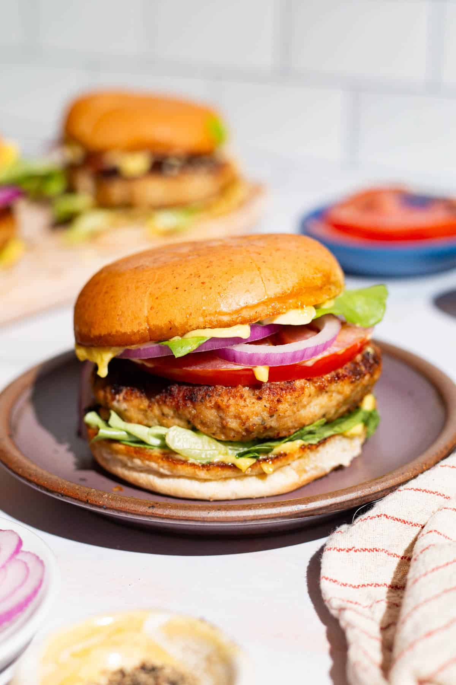

Chicken Burger

Description
We all have days where we want to disregard our health and just eat without a care in the world.
In those moments what else would be better than a chicken burger.
A big greasy juicy burger can make all your problems go away. But it also creates problems health problems.
This recipe is fairly healthier than eating from outside but moderation is the most important factor. Enjoy!!
Ingredients
- Ground chicken: This recipe starts with a pound of extra-lean ground chicken.
- Bread crumbs: Use store-bought bread crumbs or make your own at home.
- Onion: Half an onion lends texture and flavor.
- Egg: An egg adds moisture and helps bind the chicken patties together.
- Seasonings: These chicken burgers are seasoned with fresh garlic, salt, and pepper.
- Oil: Cook the chicken burger patties in olive oil on the stove.
Steps
- Mix the chicken, half of the crumbs, onion, egg, and seasonings in a bowl.
- Shape the mixture into oval-shaped patties.
- Coat the patties into the remaining bread crumbs.
- Cook the patties until they are deeply brown on both sides.
homepage